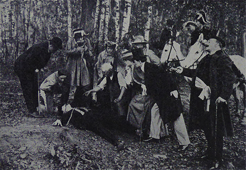
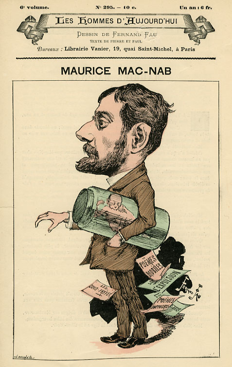
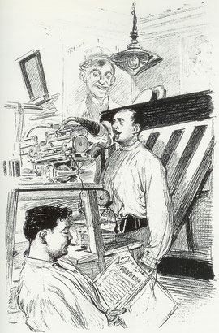
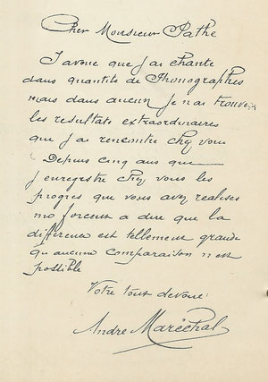
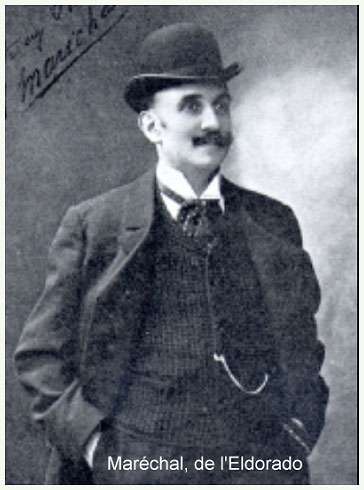
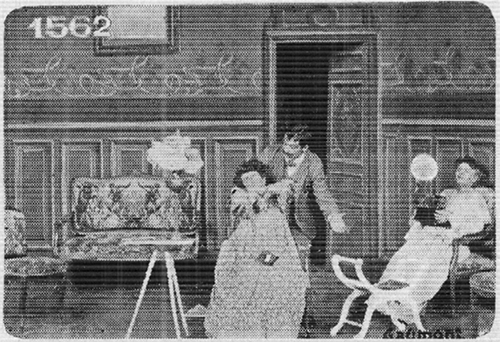
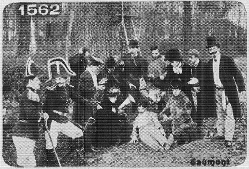

Max Linder
Six Max Linder films are known for 1906. Les Étudiants de Paris was seemingly not directed like his first film for Pathé, by Louis Gasnier, but by the otherwise completely unknown Harry Ray and written by André Heuzé. It is however in much the same line as the Gasnier film and as the earlier film made for Théophile Pathé, with Linder playing a student, the son of a provinvial notary, having a high time in the Latin quarter in Paris until the parents decide to pay a surprise visit. In the four=minute comedy Julot va dans le monde - he was not of course yet known as "Max", he again plays an ingenu, this time making his awkward entrée into fine society, ridiculous in his extravagant new clothes.
Ce pauvre Julot ! c’est certainement la première fois qu’il va dans le monde, car après beaucoup de préparatifs, il arrive tout endimanché de façon grotesque. Il se présente très maladroitement et, après avoir commis maladresses sur maladresses, se fait chasser honteusement par le maître de maison.
 Charles Huart, Lucien de Rubempré, engraving after Honoré de Balzac, Illusions perdues (12837-1843)
Charles Huart, Lucien de Rubempré, engraving after Honoré de Balzac, Illusions perdues (12837-1843)Chez Madame X., la soirée bat son plein. Les invités rivalisent d’amabilités auprès des dames, tout le monde semble réjoui. Seul un jeune homme aspirant à la main de l’héritière garde un visage morose, à cause d’une puce qui le dévore. Profitant de ce qu’il est un instant seul il retire son pantalon et se précipite au balcon pour l’y secouer. Mais un faux mouvement fait tomber le vêtement dans la rue. Surpris en caleçon, il provoque un tel scandale qu’il est chassé sans merci.
| 
|
|---|

Maurice Mac Nab

André Maréchal
The five-minute film Le Pendu (Attempted Suicide or The Man Who Hanged Himself) which appeared on 14 December
1906 probably was directed by Gasnier and is one of the most elaborate films made by Linder in the year and it is possibly his
awareness that it marked a clear advance in his career that caused him to remake it in a longer version in 1914. The film, about
a young Romeo who, having been refused the hand of his girl by her father, fakes a suicide, is also notable for the fact that it
is the first (or the first we know of) in which Max wears what would become his trademark top hat and tails, which would reeappear
in Débuts d'un patineur in 1907. The film is based on a well-known song of 1880 by poet and chansonnier Maurice Mac
Nab (1858-1889) whose songs had been published in a collected edition in 1891 as Poèmes incongrus by the Éditions Léon Vanel
(who also famously publishd the poet Verlaine) and this song was recorded for Pathé in 1906 by by music-hall artist André Maréchal
dit Maréchal de l'Eldorado. So in France this film was played as a kind of musical comedy. The "hanging" accomplished, the
unhurried rescue that follows the discovery of the body was accompanied by the voice of Maréchal.
|
|
|---|
Le Pendu de Mac Nab chanté par Maréchal
Un garçon venait de se pendre Dans la forêt de Saint Germain Pour une fillette au coeur tendre Dont on lui refusait la main
Un passant, le coeur plein d'alarme, En voyant qu'il soufflait encor' Dit "Allons chercher les gendarmes, Peut-être bien qu'il n'est pas mort !"
Le brigadier sans perdre haleine Enfourcha son grand cheval blanc. Arrivé chez le capitaine, Il conta la chose en tremblant
Un jeune homme vient de se pendre A son âge quel triste sort. Faut-il qu'on aille le dépendre ? Peut-être bien qu'il n'est pas mort.
L'officier, frisant sa moustache, Se redresse et répond soudain : "Vraiment, c'est une noble tâche Que de soulager son prochain
Cependant je n'y puis rien faire, Ce n'est pas de notre ressort. Courez-donc chez le Commissaire Le pendu vit peut-être encor'
Le Commissaire sur la place Descendit, c'était son devoir. D'un coup d'oeil embrassant l'espace, Il cria de tout son pouvoir :
Un jeune homme vient de se pendre, Villageois, debout ! Courez fort ! Emportons de quoi le dépendre Peut-être bien qu'il n'est pas mort !
Les amis pensaient : Est-ce drôle De se faire périr ainsi !" La fillette, comme une folle, Criait : Je veux mourir aussi !
Mais les parents, Miséricorde ! Disaient en guise d'oraison : Partageons-nous toujours la corde, C'est du bonheur pour la maison !
The hanged man by Mac Nab sung by Maréchal
A young man has just hanged himself In the forest of Saint Germain Desperate for a tender lass Whose hand he had been refused.
An alarmed passer-by, Seeing that he was still breathing, Said "Let us send for the gendarmes, Perhaps the man is still alive"
The constable, not losing breath Mounted his tall white horse And went riding to the Captain's To report with tremulous voice
A young man has just hanged himself At his age, what a sorry fate Shall we go and take him down? Perhaps the man is still alive
The Captain, twirling his moustache Stood up and all of a sudden Replied: It is a noble deed To relieve your neighbour's pain.
However, I can do nothing This is not in our jurisdiction. You should run to the Commissaire's The hanged man may still be living.
The Commissaire came down the square, For he was duty-bound. And quickly looking around him, He shouted with all his might:
A young man has just hanged himself Countrymen get up and run fast Let us take there what is needed. Perhaps the man is still alive
But the parents, Mercy on them! Said as a funeral oration: We can always share out the rope T'will bring good luck to the household!
We know next to nothing of the singer André Maréchal ("Maréchal of the Eldorado, although recordings survive. He was a baritone (not to be confused with Belgian tenor Alphonse Maréchal). He often sang with Charlus, who was the head of Pathé's recording department. Pathé produced a series of « scènes ciné-phonographiques » with synchronisd sound (the equivalent of the better known Gaumont « phonoscènes ». The 1904 Pathé catalogue printed a letter from Maréchal in which he expressed his gratitude (a shade obsequiously) for the work he had done with Pathé.
| 
|
|---|

André Maréchal
Maréchal singing the Mac Nab song was also available as a separate two-minute film, also called Le Pendu but it was also
clearly used to accompany the Linder film, at least at the Pathé cinema in Paris, and, by the sound of it, with Maréchal himself
present in person. The film was released on the 14 December and a review in Le Journal on 17 December describes how the
« image » represents a young man going off to the forest to hang himself (the story of the Linder film) while une
voix gouailleuse ("a mocking voice") of « un artiste » (evidently Maréchal) accompanies the subsequent events as
they unfold. Evidently, with the recording separately available, a similar effect could be obtained without his presence in provincial
cinemas. Presumably the audience were encouraged to sing along. It must all have made for a very enjoyable evening. S the review
in Le Journal puts it: « Et puis..et puis..il faut aller voir vous-même, car il y a des choses qui ne se racontent pas »
("And then..and then...you must go and see it for yourselves, for there are things that cannot be described").
None of this seems to have been available to the US audience when the film appeared there on 19 January 1907. Variety saw it rather as a satire (which it also is) and reviewed it favourably:
"Attempted Suicide" is a travesty on the "red tape" of the French police service; at least the characters seem French and the uniforms worn are of that nation. A young man disappointed in love wanders to the woods, where he hangs himself to the limb of a tree. A boy discovering him, runs in alarm to tell the gardener, who is conveniently at hand; the gardener views the death struggles, but, having a scythe in his hand, dares not cut the rope without the presence of an officer and hurries after one. A mounted policeman is secured, who rides up, looks at the hanging person and returns to the station house to report, without attempting to retrieve the young man from his sure death position. The policeman with his sergeant returns once more, watches the last feeble struggles and, ignoring the fate about to arrive, ride off to inform the young fellow's father. That personage, while alarmed, declines to hasten until his necktie and scarf have been properly adjusted, when all run to the woods, and the presumed suicide (by this time) is laid upon the ground. Upon his sweetheart arriving he embraces her madly, having been playing "possum," which may be detected by the through seeing a hook attached to the end of the rope in his coat. This relieves what would be otherwise a gruesome sight, and for real pure fun, with the burlesque on the idiotic police system always to the fore, "Attempted Suicide" will be difficult to beat.
The review is inaccurate in certain respects. The hanged man is not discovered by a gardener carrying a scythe but by a boy carrying a trowel; he is digging for truffles. The "personage" adjusting his sash before going to the rescue is not the young man's father but the commissaire (what nowadays would be the maire). The word has travelled all the way up the administrative hierarchy in exemplary French fashion. And the audience is not really suposed to notice that "hook".
There is a certain irony here because the satire of the police that the US review praises was precisely the element that Linder would remove in the 15-minute 1914 version, written and directed by himself, where the policeman (this time a comissaire) is atually sympathetic towards Max and even tries (unsuccessfully) to intercede on his behalf with the father. Evidently in July 1914, on the eve of war, such satire of the police was less acceptable. In the later version, Max has to hang himself a second time - from the chandelier - before the father is prepared to consider. The important change in the second film, as with all remakes Max made at this time, is that the central character is now clearly "Max" whereas in the 1906 version it is still just the ingenuous young man that Max had been playing in al these early films, and the reason for the father's refusal is specifically on account of his being an « artiste cinématographique ». This was not yet how Linder saw himself in 1906, still hoping for a career in the theatre. It was in this year that he made his third and last application to the Paris Conservatory, yet again rejected. The effect of that rejection would be clearly seen in 1907.
| 
|
|---|
Another version of Le Pendu was made at aound the same time by Alice Guy at Gaumont, still based on the Mac Nab poem but with the story changed so that, rather than disappointed in love, the young man is exasperated by his mother-in-law who keeps playing her phonograph too loudly and his scolding wife. This was, as we have seen, a period when a kind of friendly competition existed between the two French companies, particularly between the principal writers, André Heuzé for Pathé (who very probably wrote this film for Gasnier) and Louis Feuillade and Roméo Bosetti (one or other of whom almost certainly wrote the Gaumont version for Guy). Unlike the Pathé version, there seems to have been no accompanying synchronised recording, surprisingly perhaps at a time when Guy was very actively making « phonoscènes », but there may have been problems with copyright with regard to the song that did not as yet exist with regard to films. The song was however well known and the Gaumont film involves the same running of the gamut of the village hierarchy before the rescue party all eventually gather in the forest to cut down the hanged man (photographing him first, however, in the Gaumont version) in a scene practically identical to that in the Pathé film. It is not however a bicycle pump that revives the hanged man but the malevolent mother-in-law winding up her phonograph once more.
| 
|
|---|
The Pathé version may also have been issued in a variant where Linder is revived with holy water rather than a bicycle pump. A film is recorded in an Austrian archive, shown apparently in Vienna in 1913, where, according to the description in censorship records, «&nbps;der anscheinend tote Clown » (the seemingly dead "clown", presumably here simply meaning comedian) « mit Wiehwasser bespringst wird » (is sprinkled with holy water). The archived film is the same length as the original and this ending could have been shot later (the original pumping scene seeming too absurd) and the rather morbid element of religious jiggery-pokery subsitituted; in which case it may have been another change incorporated in Linder's own longer lost 1914 version of the film. The existing catalogue description of the 1914 film does ot explain how Max is "revived" (a use of "holy watr" is more likely to have attracted the attention of the censor) and the Austrian film is known under a later generic title (« Max Linder als Regisseur im Kino »), suggesting Linder himself was responsible for it. Given Linder's tendency to reuse films as part of live spectacles, this kind of piecemeal revision of films does not seem altogether improbable.
a name="pitou"> If Linder was still far off being the famous "Max" of later years in 1906, there is a possibility that he acted in a linked series of three films in 1906-1908 in the character of Pitou, a name typically used for a soldier. The first Pitou film, with neither director of actor credited, appeared in May 1906 and was entitled Pitou amoureux. The catalogue description is as follows:
Ces différentes scènes, dignes de Courteline, nous montrent les tribulations de Pitou, amoureux de la cuisinière de son capitaine. Obligé de se cacher dans une caisse à charbon, il en sort dans un piteux état, d’abord pour recevoir une verte semonce de son supérieur, ensuite pour aller à la salle de police.
The reference to Courteline, virtually de rigueur for such barrack-rooom comedies, refers to Georges Moinaux dit> Georges Courteline (1858-1929), author of the classic 1886 barrack-room stories
 L'Olympia in 1906
L'Olympia in 1906